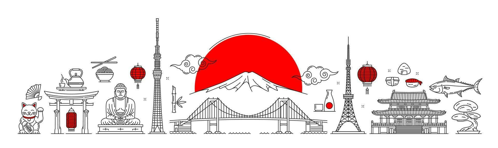
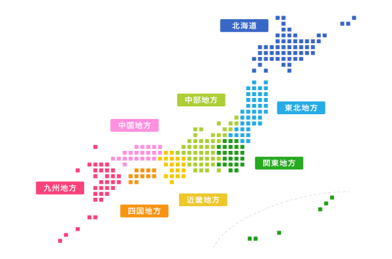

日本について知る

Japan is an island country in East Asia, located in the northwest Pacific Ocean. It is bordered on the west by the Sea of Japan, and extends from the Sea of Okhotsk in the north toward the East China Sea and Taiwan in the south. Japan is a stratovolcanic archipelago consisting of about 6,852 islands. The country's five main islands are Hokkaido, Honshu, Kyushu, Shikoku, and Okinawa.
Japan is known for its rich cultural heritage, technological advancements, and scenic landscapes. From bustling cities like Tokyo and Osaka to historic sites like Kyoto and Nara, Japan offers a diverse and unique experience for visitors.
Understanding Japanese culture, etiquette, and social norms is essential for anyone planning to visit or live in Japan. Our mission is to provide resources and insights to help international students and visitors appreciate and adapt to Japanese culture.

Utilizing the vast land which is almost 22% of the nation's land, industry in Hokkaido is mainly agriculture and dairy farming. It is also blessed with bountiful seafood. Being the most northern area of Japan, the winters here are very cold and even in the summers, it is cool. The Snow Festival in Sapporo is one of the biggest events that attract many visitors.
This region produces about 28% of the rice of the country, which is the staple food of most Japanese. The production of fruits like apples, cherries, and peaches is also strong. There are many festivals unique to each prefecture, like the "Nebuta" of Aomori Pref, "Kanto" of Akita Pref, and "Hanagasa" of Yamagata Pref, and many more.
Being the center of politics, economy, and industries, this region has almost 32% of the whole population of Japan. The coast area is a busy port for factories production lines and shipping, the central area is the core for business and culture, and the inland area is rich in agriculture. Each area shows its uniqueness.
The Chubu region sits in the middle of Japan. The side facing the Sea of Japan sees lots of snow and is active in rice farming. The side facing the Pacific Ocean is warm in climate and produces tangerines and Japanese green tea. It also has an industrial area centered in the city of Nagoya at Aichi Prefecture.
Kinki Region is the core of Western Japan and is as important as the Kanto Region. There are many cities that are very unique, starting with Kyoto and Nara which retain Japanese traditions, and cities like Osaka and Kobe where modern buildings shape the skyline.
The Sea of Japan side of the Chugoku snows a lot in winter, whereas it rains heavily in summer on the side of the Pacific Ocean of Shikoku. The Setouchi Sea is warm throughout the year. There are many tiny islands and you can see a peaceful view from the bridge connecting Chugoku Region and Shikoku Region.
Kyushu, once a window to overseas trade, has many historical sites of foreign culture. The northern part is an industrial area while the south is engaged in agriculture. The fishery is also thriving in this region due to the ocean current. Okinawa, with its beautiful ocean, is one of the most popular tourist destinations in Japan.